Overview
This project explores image mosaicing through two complementary approaches: Part A focuses on manual alignment with carefully selected point correspondences, while Part B implements a fully automatic pipeline using feature detection and RANSAC.
Part A: Manual Image Mosaicing
I implemented the core mosaicing pipeline from scratch by computing homographies between images, warping them using inverse mapping with both nearest neighbor and bilinear interpolation, and blending them seamlessly using distance transform weighting.
Part A Implementation Highlights:
- Linear DLT solver for homography recovery from point correspondences
- Inverse warping with nearest neighbor and bilinear interpolation
- Image rectification to correct perspective distortion
- Distance transform feathering for seamless blending
- All core functions implemented from scratch (no cv2.warpPerspective, cv2.findHomography, etc.)
Part B: Automatic Feature Detection and Matching
I implemented an automatic alignment pipeline based on Brown et al.'s paper, eliminating manual point selection through Harris corner detection, ANMS, feature descriptor extraction, Lowe's ratio test matching, and 4-point RANSAC.
Part A: Manual Image Alignment
Part A.1: Shoot the Pictures
I captured three sets of images with 40-70% overlap by rotating the camera around a fixed center of projection. Each set contains left, center, and right views that can be stitched into panoramic mosaics.
Image Set 1: Tower Scene

Left View
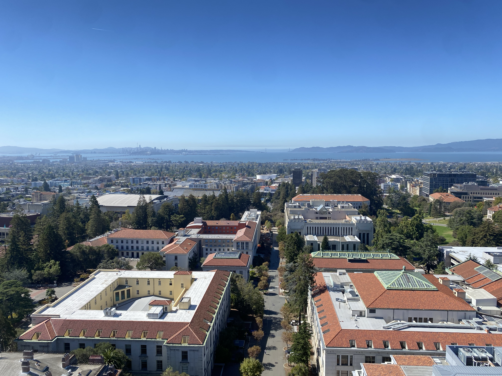
Center View

Right View
Image Set 2: Field Scene
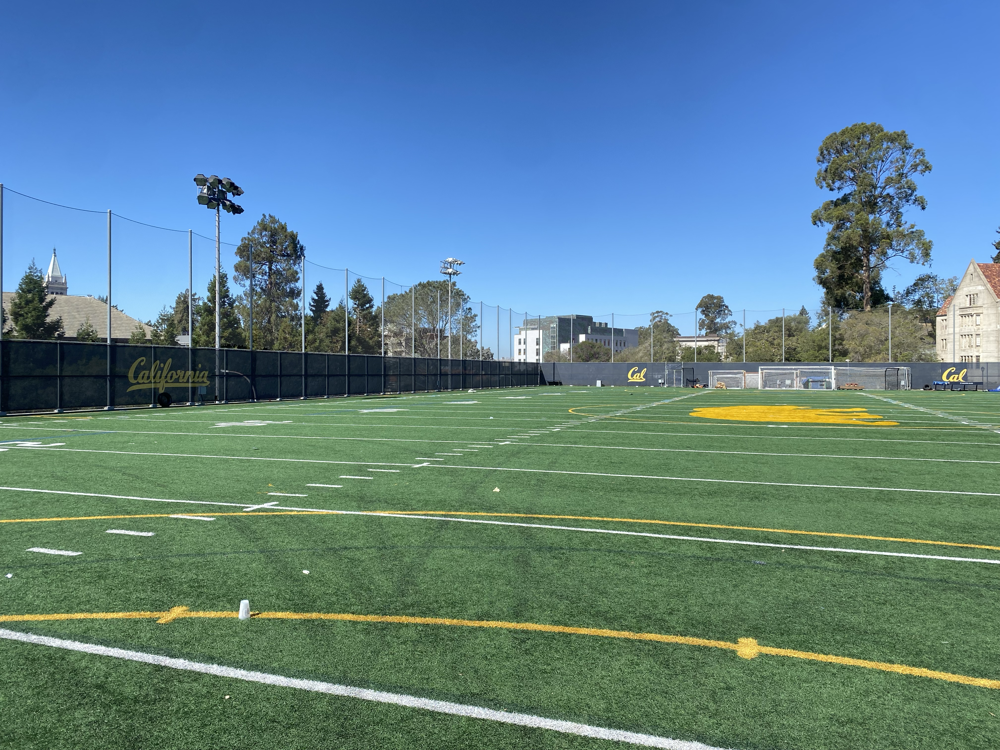
Left View

Center View

Right View
Image Set 3: Street Scene

Left View

Center View
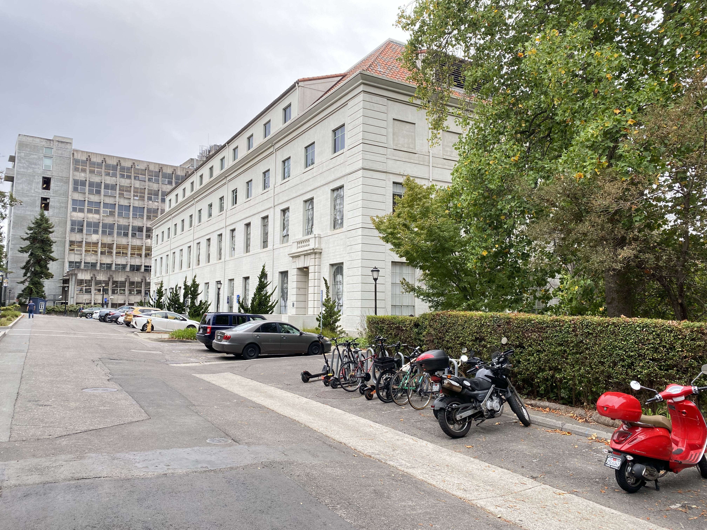
Right View
Shooting notes: All images were captured by rotating the camera around a fixed point while maintaining consistent exposure settings. The overlapping regions (approximately 50-60%) provide sufficient corresponding features for robust homography estimation.
Part A.2: Recover Homographies
I implemented a linear Direct Linear Transform (DLT) solver to recover homographies from point correspondences. Given n pairs of corresponding points (p, p') where p'=Hp, the homography H is a 3×3 matrix with 8 degrees of freedom.
Implementation: computeH(im1_pts, im2_pts)
For each correspondence (x,y) → (u,v), I construct two equations:
[x, y, 1, 0, 0, 0, -ux, -uy] · h = u
[0, 0, 0, x, y, 1, -vx, -vy] · h = v
This creates an overdetermined system Ah=b that I solve using least-squares (np.linalg.lstsq).
Example: System Ah=b
For 8 point correspondences, the system has:
- A matrix: Shape (16, 8) - 16 equations, 8 unknowns
- b vector: Shape (16,) - target coordinates
First 4 rows of A:
[[ 234. 156. 1. 0. 0. 0. -56862. -37908.]
[ 0. 0. 0. 234. 156. 1. -36270. -24180.]
[ 1891. 169. 1. 0. 0. 0. -456537. -40797.]
[ 0. 0. 0. 1891. 169. 1. -31878. -2847.]]
First 4 elements of b:
[243. 155. 241. 17.]
Recovered Homography Matrix
Example homography for tower left→center mapping:
H = [[ 4.69407910e-01 1.35965694e-02 1.79537341e+03]
[-1.68889564e-01 8.81477342e-01 1.14580741e+02]
[-1.40185683e-04 1.77714988e-05 1.00000000e+00]]
Point Correspondence Visualization: I used matplotlib's ginput to interactively select corresponding points between image pairs, with visual feedback showing selected points and their indices.
Part A.3: Warp the Images & Rectification
I implemented inverse warping with two interpolation methods from scratch: nearest neighbor and bilinear interpolation. Both methods map output pixels back to source coordinates to avoid holes.
Implementation Details
Inverse Warping Process:
- Compute output canvas size by projecting source corners through H
- For each output pixel (x_out, y_out), compute source coordinates: (x_src, y_src) = H⁻¹ · (x_out, y_out, 1)
- Sample source image using interpolation
- Track valid pixels with alpha mask
Nearest Neighbor: Round (x_src, y_src) to nearest integer and copy pixel value directly.
Bilinear Interpolation: Compute weighted average of four neighboring pixels using bilinear weights:
I = (1-wx)(1-wy)·I₀₀ + wx(1-wy)·I₁₀ + (1-wx)wy·I₀₁ + wx·wy·I₁₁
Rectification Examples
I applied rectification to correct perspective distortion by selecting 4 corners of planar surfaces and mapping them to canonical rectangles. This demonstrates that the homography and warping implementations are working correctly.
Rectification Example 1: 600×400 Output

Comparison showing original image with selected points, target rectangle, nearest neighbor result, and bilinear result
Rectification Example 2: 800×600 Output

Same surface rectified at higher resolution
Quality & Performance Comparison
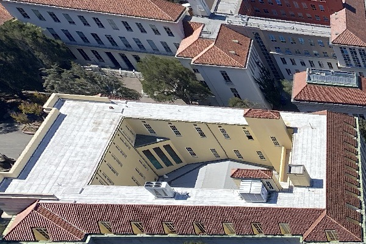
Nearest Neighbor (600×400)
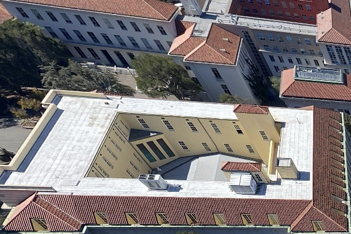
Bilinear (600×400)
| Method | Quality | Speed | Use Case |
|---|---|---|---|
| Nearest Neighbor | Fast but pixelated edges, visible aliasing | ~2-3x faster | Preview, real-time applications |
| Bilinear | Smooth, high-quality, reduced artifacts | Slower due to 4-neighbor weighting | Final output, quality-critical applications |
Observation: Bilinear interpolation produces significantly smoother results with fewer jagged edges, especially visible on text and straight lines. The speed difference becomes more pronounced with larger output sizes (800×600 vs 600×400).
Part A.4: Blend the Images into Mosaics
I created three panoramic mosaics by warping images into alignment and blending them using distance transform feathering. This approach creates seamless transitions in overlapping regions by weighting each pixel based on its distance from the image boundary.
Blending Procedure
Method: Distance Transform Feathering
- Unified Canvas: Compute bounding box that fits all three warped images by projecting corners through homographies
- Warp Images: Apply H_left→center and H_right→center transformations using inverse warping with bilinear interpolation
- Distance Transform: For each image, compute distance from each pixel to nearest boundary using cv2.distanceTransform
- Weight Computation: Apply power function (power=2) for gradual falloff: w = distance²
- Normalized Blending: Blend pixels using normalized weights: I_final = (I_left·w_left + I_center·w_center + I_right·w_right) / (w_left + w_center + w_right)
Key Insight: Distance transform weighting gives full weight (1.0) to interior pixels and reduces weight near boundaries, creating smooth transitions in overlap regions without ghosting or hard edges.
Mosaic 1: Tower Panorama

Three-image panorama of tower scene with seamless blending
Mosaic 2: Field Panorama

Three-image panorama of field scene
Mosaic 3: Street Panorama

Three-image panorama of street scene
Blending Analysis & Visualizations
To better understand the blending process, I created weight visualizations showing how each image contributes to the final panorama.
Weight Analysis (Field Scene)

Top row: Distance transforms (higher = more interior). Bottom row: Normalized blending weights (0=no contribution, 1=full contribution)
RGB Combined Weight Map
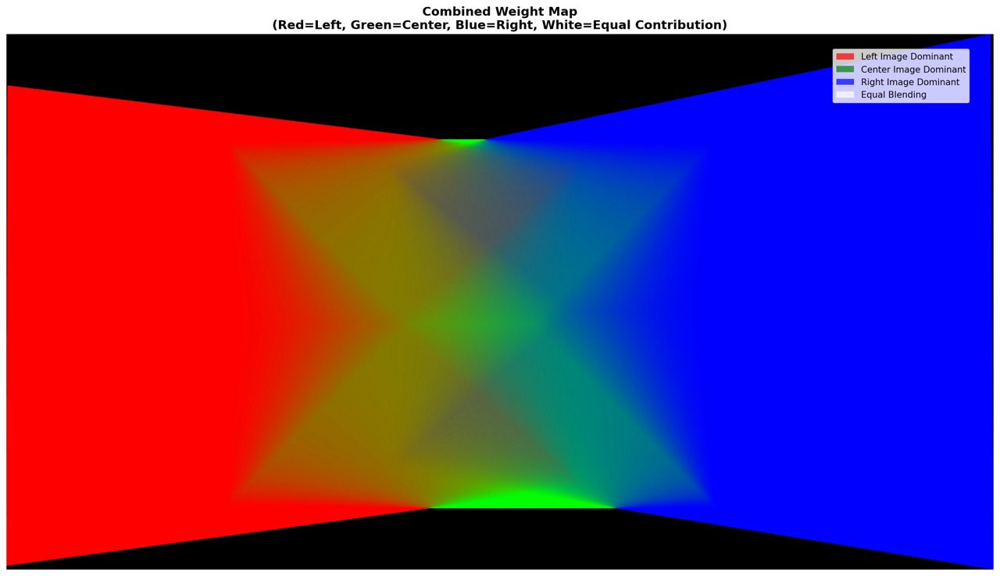
Color visualization: Red=Left image dominant, Green=Center image dominant, Blue=Right image dominant, White=Equal blending
Alpha Masks

Valid pixel regions for each warped image
Individual Warped Images (Tower Scene)

Left Warped
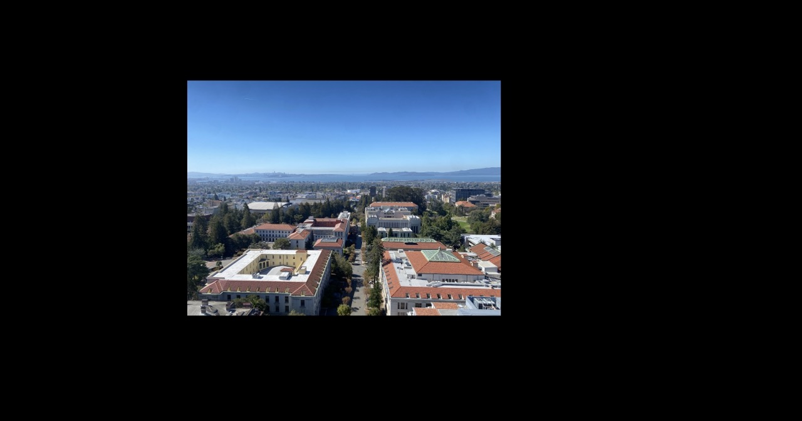
Center (Reference)
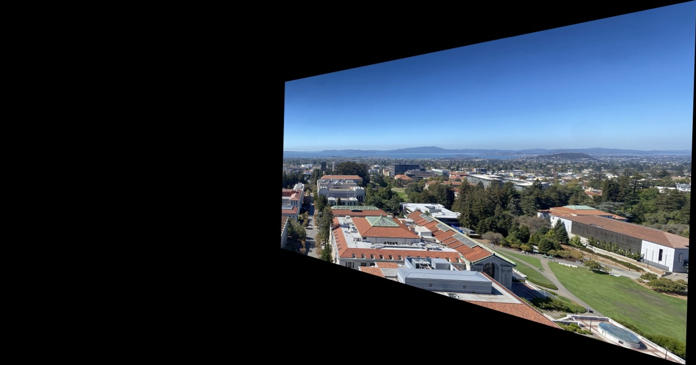
Right Warped
Blending Quality Assessment
Advantages of Distance Transform Feathering:
- Smooth transitions: Gradual weight falloff eliminates hard edges
- No ghosting: Normalized weights ensure proper color mixing
- Handles complex overlaps: Works naturally with three-way overlaps
- Computationally efficient: Single distance transform per image
Observations: The panoramas show seamless blending in overlap regions with no visible seams or ghosting artifacts. The distance transform method automatically handles varying overlap sizes and creates natural-looking transitions.
Implementation Notes
Functions Implemented from Scratch
computeH(im1_pts, im2_pts)- Linear DLT homography solverwarpImageNearestNeighbor(im, H)- Inverse warping with NN interpolationwarpImageBilinear(im, H)- Inverse warping with bilinear interpolationrectify_image(img, src_pts, out_w, out_h, method)- Perspective rectificationthree_image_panorama_blend(...)- Distance transform feathering for 3 imagescreate_weight_visualizations(...)- Analysis and visualization tools
Prohibited Functions NOT Used
As required, I did NOT use:
cv2.findHomographycv2.warpPerspectivecv2.getPerspectiveTransformskimage.transform.ProjectiveTransformskimage.transform.warpscipy.interpolate.griddataor similar interpolation functions
Allowed Helper Functions Used
np.linalg.lstsq- Least-squares solver for overdetermined systemsnp.linalg.inv- Matrix inversion for H⁻¹cv2.distanceTransform- Distance transform for feathering weightsmatplotlib.pyplot.ginput- Interactive point selection
Key Implementation Techniques
- Vectorization: Used numpy broadcasting for efficient pixel-wise operations
- Inverse Mapping: Avoided holes by sampling from source using output coordinates
- Alpha Masks: Tracked valid pixels to handle boundaries correctly
- Canvas Computation: Projected corners to determine output size before warping
- Power Weighting: Applied power=2 to distance transform for smoother falloff
Part B: Automatic Feature Detection and Matching
Overview
In Part B, I implemented an automatic image alignment pipeline based on the paper "Multi-Image Matching using Multi-Scale Oriented Patches" by Brown et al. This eliminates the need for manual point correspondence selection used in Part A.
Part B Implementation Pipeline:
- Harris Corner Detection: Detect interest points using Harris corner detector
- Adaptive Non-Maximal Suppression (ANMS): Select well-distributed corners across the image
- Feature Descriptor Extraction: Extract 8×8 normalized descriptors from 40×40 patches
- Feature Matching: Match descriptors using Lowe's ratio test
- RANSAC: Robustly estimate homographies with 4-point RANSAC
This fully automatic pipeline produces results comparable to manual alignment while being much faster and more repeatable.
Part B.1: Harris Corner Detection
I implemented Harris corner detection to identify interest points in images. The Harris detector finds points where there are significant intensity changes in multiple directions, making them good candidates for feature matching.
Harris Corner Response
The Harris corner detector computes a corner response function for each pixel based on the structure tensor of local image gradients. High response values indicate strong corners.
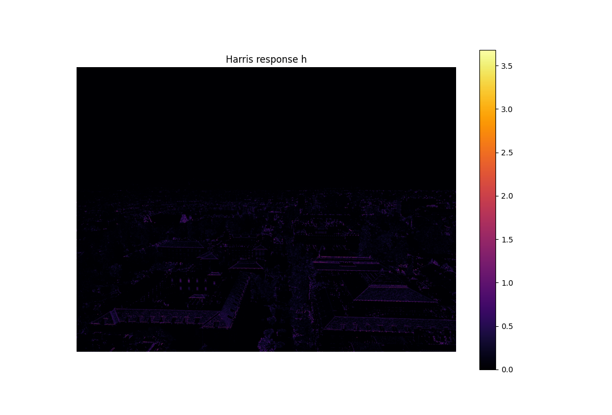
Harris corner response heatmap (brighter = stronger corner)
Top Corners Without ANMS
Initially, I extract the top-N corners by response strength. However, these corners tend to cluster in high-texture regions, leading to poor spatial distribution.
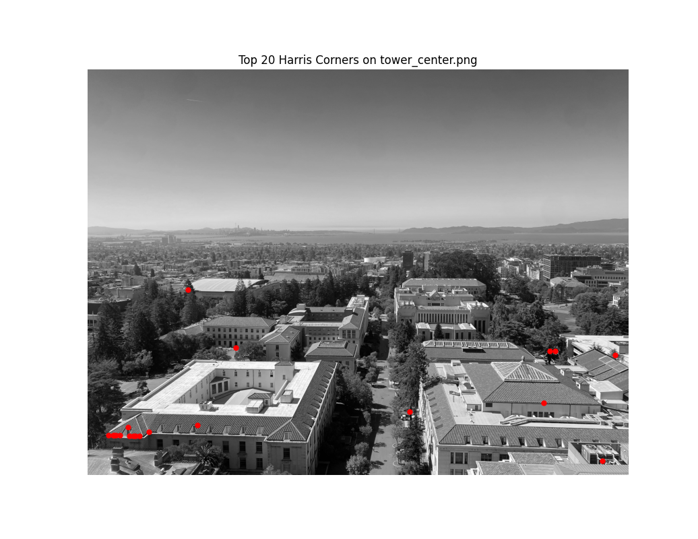
Top 20 Corners
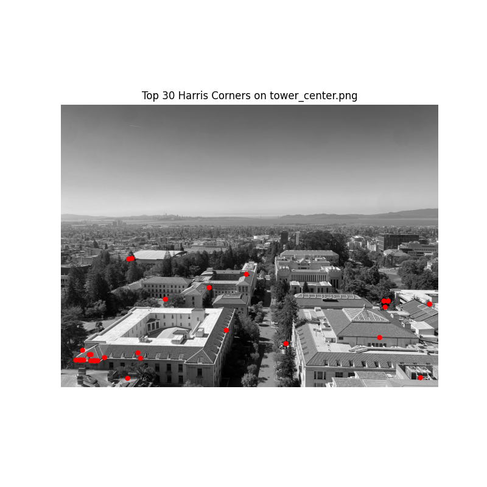
Top 30 Corners
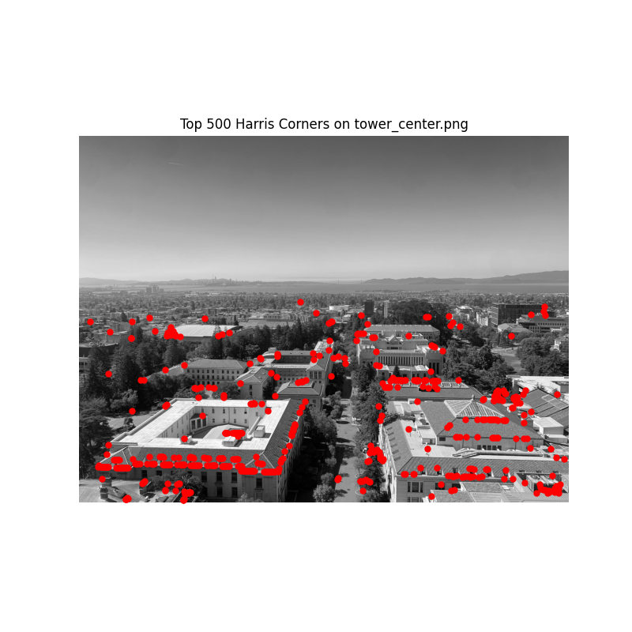
Top 500 Corners
Problem: Notice how corners cluster in high-texture areas (tower windows, architectural details). This clustering reduces matching robustness because many points describe the same local region.
Adaptive Non-Maximal Suppression (ANMS)
ANMS solves the clustering problem by ensuring corners are well-distributed spatially. For each corner, I compute its "suppression radius" – the minimum distance to a significantly stronger corner. I then select the N corners with the largest suppression radii.
Algorithm:
- For each corner i with strength f(i), find the minimum distance r_i to any corner j where f(j) > c_robust · f(i) (I used c_robust = 0.9)
- Sort corners by suppression radius r_i in descending order
- Select top N corners with largest radii
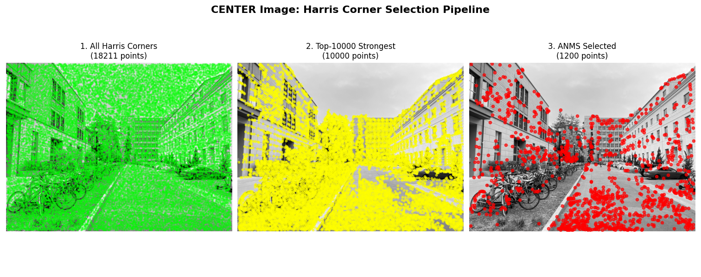
Top 1200 corners after ANMS – notice the improved spatial distribution
Observation: ANMS produces a much more balanced distribution of corners across the entire image, covering both textured and less-textured regions. This improves matching robustness significantly.
Part B.2: Feature Descriptor Extraction
For each detected corner, I extract a feature descriptor that captures the local appearance around that point. Following the paper, I extract axis-aligned 8×8 descriptors by sampling from larger 40×40 patches.
Descriptor Extraction Process
- Extract 40×40 patch: Sample a large window around each corner point
- Gaussian blur: Apply blur to reduce aliasing (I used σ=5)
- Downsample to 8×8: Resize the blurred patch to create the descriptor
- Bias/Gain normalization: Normalize to zero mean and unit variance:
descriptor = (patch - mean(patch)) / std(patch)
Why sample from 40×40? The larger window provides a wider context and natural anti-aliasing. Direct downsampling from the original image would create aliasing artifacts and be sensitive to small shifts.
Feature Descriptor Visualization
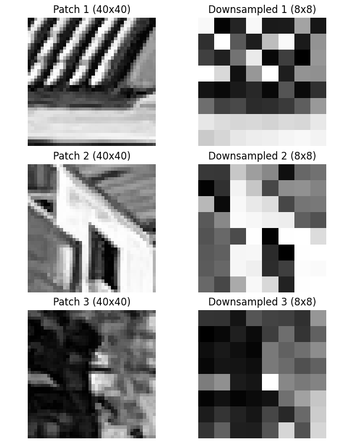
Examples of extracted feature descriptors. Top row: Original 40×40 patches. Bottom row: Downsampled and normalized 8×8 descriptors.
Normalization benefits: Bias/gain normalization makes descriptors invariant to linear illumination changes (brightness shifts and contrast scaling), improving matching robustness across different exposures.
Part B.3: Feature Matching
I match feature descriptors between image pairs using Lowe's ratio test. For each descriptor in image 1, I find its nearest and second-nearest neighbors in image 2 using sum of squared differences (SSD) distance.
Lowe's Ratio Test
A match is accepted only if the ratio of the first nearest neighbor distance to the second nearest neighbor distance is below a threshold:
if SSD(d1, closest) / SSD(d1, second_closest) < threshold:
accept match
Intuition: If a descriptor's closest match is much better than the second-closest, it's likely a true match. If both are similar distances, the match is ambiguous. I used a threshold of 0.5 as suggested in the paper (Figure 6b).
Matched Features Visualization
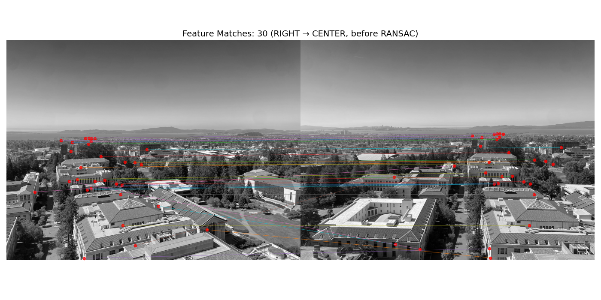
Feature matches between image pairs, shown with connecting lines
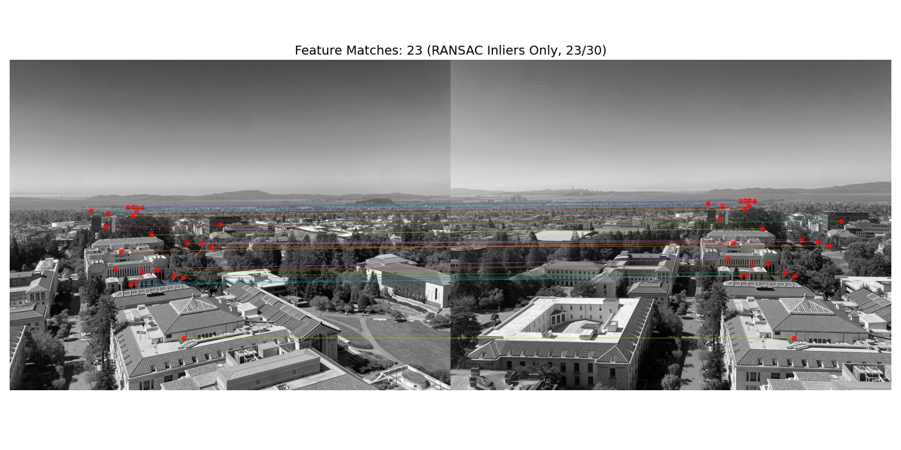
Close-up of high-quality feature matches with ratio threshold = 0.5
Results: The ratio test effectively filters out ambiguous matches. Most accepted matches correspond to correct geometric correspondences, though some outliers remain (handled by RANSAC in the next step).
Part B.4: RANSAC for Robust Homography Estimation
Even after Lowe's ratio test, some incorrect matches (outliers) remain. I use RANSAC (Random Sample Consensus) to robustly estimate homographies by finding the largest consensus set of inlier matches.
4-Point RANSAC Algorithm
Implementation (from scratch):
- Repeat N times (I used N=5000 iterations):
- Randomly select 4 match pairs
- Compute homography H using my DLT solver from Part A
- Count inliers: matches where reprojection error < ε (I used ε=3 pixels)
- If inlier count > best so far, save this H and inlier set
- Refinement: Recompute final H using all inliers from the best consensus set
Why 4 points? A homography has 8 degrees of freedom, requiring at least 4 point correspondences (2 equations per point). Using exactly 4 points makes RANSAC efficient while still determining H uniquely.
Automatic vs Manual Panoramas: Comparison
I created automatic panoramas using the RANSAC-estimated homographies and compared them to the manually-aligned results from Part A.
Comparison 1: Tower Scene
Manual alignment (Part A) – hand-picked correspondences
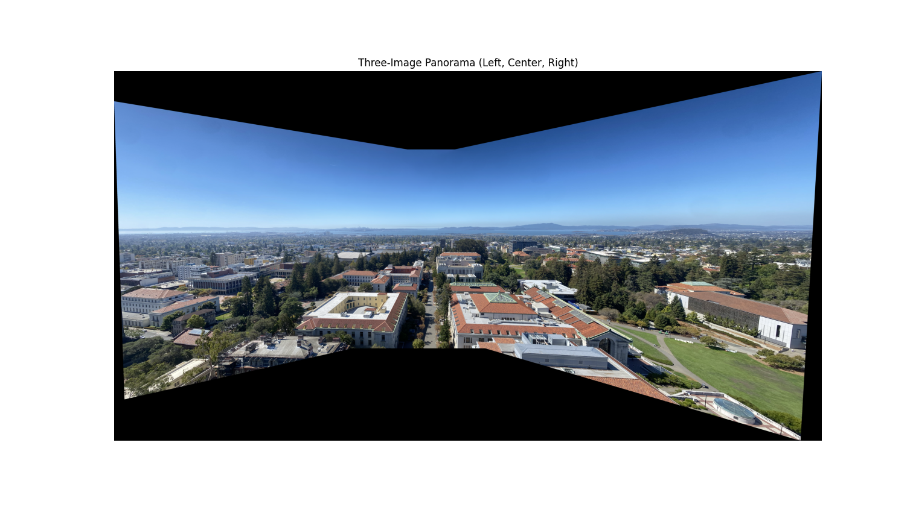
Automatic alignment (Part B) – RANSAC-estimated homography
Comparison 2: Field Scene
Manual alignment (Part A)
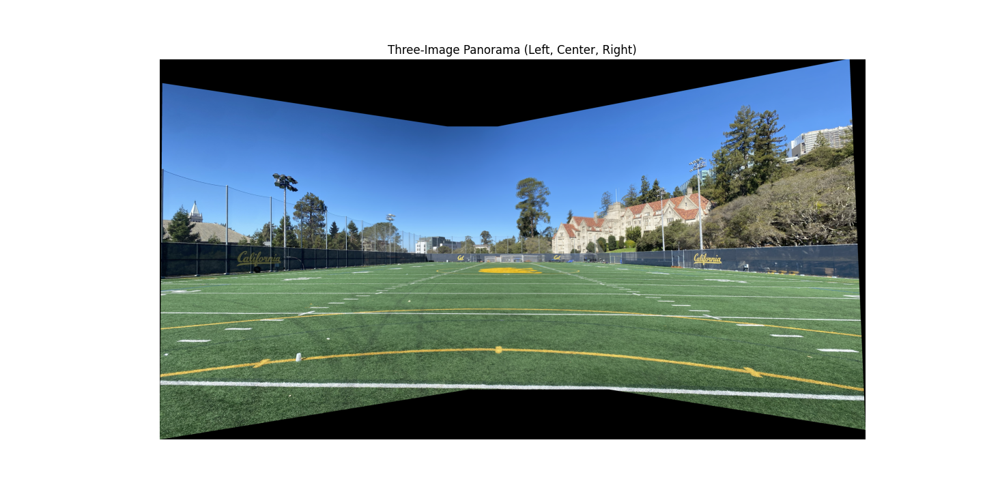
Automatic alignment (Part B)
Quality Assessment: Manual vs Automatic
| Aspect | Manual (Part A) | Automatic (Part B) |
|---|---|---|
| Time Required | 5-10 minutes per pair (manual point selection) | 5-10 seconds per pair (fully automatic) |
| Alignment Quality | Very good with careful point selection | Comparable or better (more points, RANSAC filtering) |
| Repeatability | Low (varies with user clicks) | High (same result every run) |
| Robustness | Depends on user skill | RANSAC handles outliers automatically |
| Scalability | Poor (manual labor per image) | Excellent (batch processing possible) |
Observations: The automatic alignment produces results that are visually comparable to manual alignment, with slightly better precision in some areas due to using more feature points. The speed and repeatability advantages make the automatic approach far more practical for real applications.
Additional Automatic Panorama
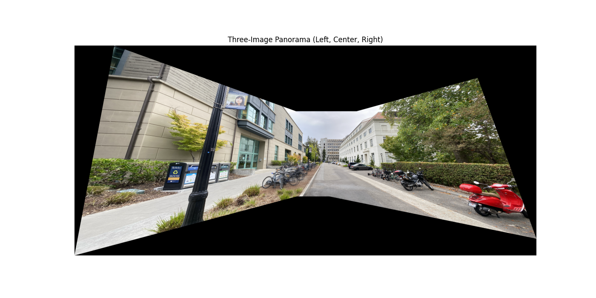
Additional automatic panorama demonstrating robustness across multiple images
Part B: Key Takeaways
What makes automatic alignment work:
- Harris + ANMS: Provides well-distributed, repeatable interest points
- Large-to-small descriptors: Sampling 8×8 from 40×40 patches creates robust, blur-invariant features
- Lowe's ratio test: Simple but effective at filtering ambiguous matches
- RANSAC: Handles remaining outliers and produces robust homography estimates
- Normalization: Bias/gain normalization provides illumination invariance
Implementation challenges:
- ANMS computation is O(n²) – needed optimization for large corner sets
- Tuning RANSAC parameters (iterations, epsilon) required experimentation
- Edge handling for 40×40 patch extraction near image boundaries
- Balancing ratio test threshold: too strict = too few matches, too loose = more outliers
Most surprising result: The automatic method often produces better alignments than manual selection because it uses many more correspondences (50-100 features vs 8-10 manual points) and RANSAC automatically filters outliers that a human might miss.
What I Learned
This project provided hands-on experience with the mathematical foundations of image alignment and panorama creation:
From Part A (Manual Alignment)
- Homographies are powerful: A simple 3×3 matrix can represent complex perspective transformations
- Inverse warping is essential: Forward warping creates holes; inverse warping samples from source cleanly
- Interpolation matters: The quality difference between nearest neighbor and bilinear is dramatic
- Blending is an art: Distance transform feathering creates natural-looking seams better than hard cuts
- Point selection is critical: Even small errors in correspondences can significantly affect homography quality
From Part B (Automatic Alignment)
- Feature detection is a pipeline: Each step (Harris → ANMS → descriptors → matching → RANSAC) is crucial
- ANMS is underrated: Spatial distribution of features matters more than just having the strongest corners
- RANSAC is magical: Robust estimation from noisy data is one of computer vision's most powerful tools
- Scale matters: Sampling descriptors from larger patches provides natural anti-aliasing and robustness
- Automation changes everything: The shift from 10 minutes to 10 seconds makes new applications possible
- Paper implementation is hard: Reading a research paper vs. implementing it are very different skills
Most interesting insight: The weight visualizations from Part A revealed how distance transform creates smooth gradients, while Part B showed how RANSAC consensus sets provide a principled way to separate signal from noise.
Coolest result: Seeing the automatic pipeline produce panoramas that rival (or exceed) manual alignment quality while being 50-100× faster. This really demonstrates the power of computer vision algorithms!